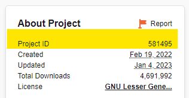

CurseForge
Running a server with a CurseForge modpack¶
Auto CurseForge Management¶
To manage a CurseForge modpack automatically with upgrade support, pinned or latest version tracking, set TYPE to "AUTO_CURSEFORGE". The appropriate mod loader (Forge / Fabric) version will be automatically installed as declared by the modpack. This mode will also take care of cleaning up unused files installed by previous versions of the modpack, but world data is never auto-removed.
Info
A CurseForge API key is required to use this feature. Go to their developer console, generate an API key, and set the environment variable CF_API_KEY.
When entering your API Key in a docker compose file you will need to escape any $ character with a second $.
Example if your key is $11$22$33aaaaaaaaaaaaaaaaaaaaaaaaaa:
If you use docker run you will need to escape the $ with a \.
Example:
To avoid exposing the API key, it is highly recommended to use a .env file, which is loaded automatically by docker compose. $'s in the value still need to escaped with a second $ and the variable needs to be referenced from the compose file, such as:
To use the equivalent with docker run you need to specify the .env explicitly:
Note
Be sure to use the appropriate image tag for the Java version compatible with the modpack.
Most modpacks require a good amount of memory, so it best to set MEMORY to at least "4G" since the default is only 1 GB.
Use one of the following to specify the modpack to install:
Pass a page URL to the modpack or a specific file with CF_PAGE_URL such as the modpack page "https://www.curseforge.com/minecraft/modpacks/all-the-mods-8" or a specific file "https://www.curseforge.com/minecraft/modpacks/all-the-mods-8/files/4248390". For example:
Instead of a URL, the modpack slug can be provided as CF_SLUG. The slug is the short identifier visible in the URL after "/modpacks/", such as

For example:
The latest file will be located and used by default, but if a specific version is desired you can use one of the following options. With any of these options do not select a server file -- they lack the required manifest and defeat the ability to consistently automate startup.
- Use
CF_PAGE_URL, but include the full URL to a specific file - Set
CF_FILE_IDto the numerical file ID - Specify a substring to match the desired filename with
CF_FILENAME_MATCHER
The following shows where to get the URL to the specific file and also shows where the file ID is located:

The following examples all refer to version 1.0.7 of ATM8:
Quite often there are mods that need to be excluded, such as ones that did not properly declare as a client mod via the file's game versions. Similarly, there are some mods that are incorrectly tagged as client only. The following describes two options to exclude/include mods:
Global and per modpack exclusions can be declared in a JSON file and referenced with CF_EXCLUDE_INCLUDE_FILE. By default, the file bundled with the image will be used, but can be disabled by setting this to an empty string. The schema of this file is documented here.
Alternatively, they can be excluded by passing a comma or space delimited list of project slugs or IDs via CF_EXCLUDE_MODS. Similarly, there are some mods that are incorrectly tagged as client only. For those, pass the project slugs or IDs via CF_FORCE_INCLUDE_MODS. These lists will be combined with the content of the exclude/include file, if given.
A mod's project ID can be obtained from the right hand side of the project page: 
If needing to iterate on the options above, set CF_FORCE_SYNCHRONIZE to "true" to ensure the exclude/includes are re-evaluated.
Note
These options are provided to empower you to get your server up and running quickly. Please help out by reporting an issue with the respective mod project. Ideally mod developers should use correct registrations for one-sided client mods. Understandably, those code changes may be non-trivial, so mod authors can also add "Client" to the game versions when publishing.
Some modpacks come with world/save data via a worlds file and/or the overrides provided with the modpack. Either approach can be selected to set the LEVEL to the resulting saves directory by setting CF_SET_LEVEL_FROM to either:
- WORLD_FILE
- OVERRIDES
Other configuration available:
- CF_PARALLEL_DOWNLOADS (default is 4): specify how many parallel mod downloads to perform
- CF_OVERRIDES_SKIP_EXISTING (default is false): if set, files in the overrides that already exist in the data directory are skipped. NOTE world data is always skipped, if present.
Old approach¶
Enable this server mode by adding -e TYPE=CURSEFORGE to your command-line,
but note the following additional steps needed...
You need to specify a modpack to run, using the CF_SERVER_MOD environment
variable. A CurseForge server modpack is available together with its respective
client modpack at https://www.curseforge.com/minecraft/modpacks .
Now you can add a -e CF_SERVER_MOD=name_of_modpack.zip to your command-line.
docker run -d -v /path/on/host:/data -e TYPE=CURSEFORGE \
-e CF_SERVER_MOD=SkyFactory_4_Server_4.1.0.zip \
-p 25565:25565 -e EULA=TRUE --name mc itzg/minecraft-server
If you want to keep the pre-download modpacks separate from your data directory,
then you can attach another volume at a path of your choosing and reference that.
The following example uses /modpacks as the container path as the pre-download area:
docker run -d -v /path/on/host:/data -v /path/to/modpacks:/modpacks \
-e TYPE=CURSEFORGE \
-e CF_SERVER_MOD=/modpacks/SkyFactory_4_Server_4.1.0.zip \
-p 25565:25565 -e EULA=TRUE --name mc itzg/minecraft-server
Modpack data directory¶
By default, CurseForge modpacks are expanded into the sub-directory /data/FeedTheBeast and executed from there. (The default location was chosen for legacy reasons, when Curse and FTB were maintained together.)
The directory can be changed by setting CF_BASE_DIR, such as -e CF_BASE_DIR=/data.
Buggy start scripts¶
Some modpacks have buggy or overly complex start scripts. You can avoid using the bundled start script and use this image's standard server-starting logic by adding -e USE_MODPACK_START_SCRIPT=false.
Fixing "unable to launch forgemodloader"¶
If your server's modpack fails to load with an error like this:
unable to launch forgemodloader
then you apply a workaround by adding this to the run invocation:
-e FTB_LEGACYJAVAFIXER=true